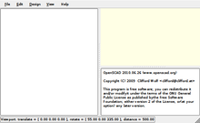
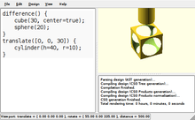

 OpenSCAD after starting
Open one of the many examples that come with OpenSCAD (File, Examples). Or you can copy and paste this simple example into the OpenSCAD window:
| Usage example 1
|
difference() {
cube(30, center=true);
sphere(20);
}
translate([0, 0, 30]) {
cylinder(h=40, r=10);
}
|
 OpenSCAD after pasting the example code and pressing F5
Then press F5 to get a graphical preview of what you typed (or press F6 to get a graphical view).
You get three types of movement in the preview frame:
- Drag with left mouse button to rotate the view. The bottom line changes the rotate values.
- Drag with any other mouse button (or control-drag under OSX) to translate (move) the view. The bottom line changes translate values.
- Use the mouse scroll to zoom in and out. Alternatively you can use the + and - keys, or right-drag with the mouse while pressing a shift key (or control-shift-drag under OSX). The Viewport line at the bottom of the window shows a change in the distance value.
See also
Previous: Model views
Next: The OpenSCAD User Interface
{kind=link}
{kind=link}